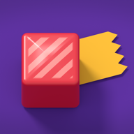

TapenPolítica de privacidad de Tapen
Versión: 1.2
Fecha de entrada en vigor: 14 de noviembre de 2026
Resumen
- Responsable: AHMET TUNA YAŞAROĞLU, support@tapengame.com
- Partida guardada: El juego no tiene servidor de juego propio y no necesitas cuenta; solo lee un pequeño archivo de ajustes de nuestra web al abrirse (sección 2.10). Tu partida guardada se queda en tu dispositivo. En iPhone y iPad, si iCloud está activado, se guarda una copia en tu cuenta de iCloud con Apple; en Android, si la copia de seguridad de Google de tu dispositivo está activada, la partida puede incluirse en ella.
- Datos personales que nos llegan: Los correos que decidas enviarnos; si compras algo en Android, el registro del pedido de Google Play (sección 2.6); si te uniste a una versión de prueba, tu registro de prueba (sección 2.11).
- Anuncios: Los anuncios del juego los muestra Google AdMob. No te mostramos anuncios personalizados ni te seguimos entre aplicaciones. Google recoge sus propios datos para mostrar y medir anuncios (sección 2.5).
- Bases jurídicas: Ejecución del contrato, interés legítimo y, cuando hace falta, tu consentimiento. Cada sección indica su base.
- Transferencias: Los datos van a Apple, Google, al proveedor de alojamiento de nuestra web y a nuestro proveedor de correo para que presten estos servicios. Sus servidores pueden estar fuera de tu país.
- Tus derechos: Escribe a support@tapengame.com para ejercer tus derechos según el RGPD o la ley turca (sección 9).
Esta política te informa conforme al Reglamento General de Protección de Datos (RGPD) y a la Ley turca n.º 6698 de Protección de Datos Personales (KVKK). Cubre las versiones para iPhone y iPad (iOS) y para Android; las partes que solo valen para una plataforma lo indican.
1. Responsable
AHMET TUNA YAŞAROĞLU (en el App Store: AHMET TUNA YASAROGLU; en Google Play: Tapen)
Correo: support@tapengame.com
2. Qué datos, para qué y con qué base jurídica
Estos datos se obtienen por medios automatizados cuando usas el juego, a través del propio juego y del software de Apple y Google que incluye; los correos de ayuda se obtienen cuando nos los envías.
2.1. Partida guardada en tu dispositivo
Datos: Tu progreso, aspectos, contadores de pistas y anuncios, derechos de compra, descubrimientos y ajustes.
Finalidad: Que el juego funcione y puedas seguir donde lo dejaste.
Esta partida se queda en tu dispositivo y no se nos envía. Si la copia de seguridad de iCloud o una copia en el ordenador está activada, iOS puede guardarla junto con otros datos de apps; esas copias las gestionáis Apple y tú. En Android, si la copia de seguridad del dispositivo está activada, Android puede incluir esta partida, junto con otros datos de apps, en la copia de seguridad de tu cuenta de Google y restaurarla al pasar a un dispositivo nuevo; esa copia la gestionáis Google y tú. La partida contiene números de dispositivo generados al azar. Una copia aparte del número de este dispositivo, guardada en el dispositivo, no se incluye en la copia de seguridad; tras restaurarla en otro dispositivo, el juego le asigna un número nuevo a ese dispositivo.
2.2. Partida en iCloud (iPhone y iPad)
El juego guarda una copia de tu partida en el almacenamiento clave-valor de Apple, en tu propia cuenta de iCloud. Así tu progreso vuelve en otro dispositivo o después de eliminar y reinstalar el juego. La versión para Android no tiene iCloud ni otra partida en la nube.
- Datos: niveles completados y mejores resultados, estadísticas de juego, registro de pistas (incluidas las pistas sin usar), contadores de anuncios, paquetes, aspectos y estilos que tienes y que llevas puestos, tarjetas vistas y descubrimientos, la hora de la partida, números de transacción de Apple de las compras aplicadas y números de dispositivo generados al azar. Ningún ajuste (idioma, sonido) ni información personal.
- Finalidad: Llevar y proteger tu progreso entre tus dispositivos.
- Base jurídica: Ejecución del contrato (art. 6.1.b RGPD, art. 5.2.c KVKK).
- Apple guarda estos datos según las condiciones de tu cuenta de Apple; nosotros no podemos verlos. Los derechos de compra se verifican siempre con el App Store, nunca a partir de esta copia.
2.3. Game Center (iPhone y iPad)
Si inicias sesión en Game Center, el juego envía dos cosas a Apple: el número de niveles que has completado (clasificación) y los logros que consigues.
- Finalidad: Clasificación y logros.
- Base jurídica: Ejecución del contrato (art. 6.1.b RGPD, art. 5.2.c KVKK).
- Apple muestra y guarda tu apodo, tu perfil y tu puesto en la clasificación; otros jugadores pueden verlos. El juego no guarda tu identidad de Game Center. Iniciar sesión es opcional; el juego se puede jugar por completo sin hacerlo. La versión para Android no tiene clasificación ni logros y no se conecta a Google Play Juegos.
2.4. Informes de fallos y analíticas de Apple y Google
El juego no incluye ninguna herramienta propia de analíticas ni de informes de fallos.
En iPhone y iPad, si «Compartir con desarrolladores de apps» está activado, Apple recoge informes de fallos e información de uso. Apple nos los comparte de forma agregada o sin identificarte: descargas, sesiones, país, modelo de dispositivo, versión, registros técnicos de un fallo.
- Finalidad: Corregir errores y mejorar el juego.
- Base jurídica: El permiso que Apple o Google te pide y nuestro interés legítimo (art. 6.1.f RGPD, art. 5.2.f KVKK).
- En iPhone y iPad, puedes desactivarlo en Ajustes > Privacidad y seguridad > Análisis y mejoras.
En Android, si compartir datos de uso y diagnóstico con Google está activado, Google Play recoge informes de fallos y de «la aplicación no responde». Google nos los comparte en Google Play Console de forma agregada o sin identificarte: modelo de dispositivo, versión de Android, versión del juego, registros técnicos de un fallo. Puedes cambiarlo en los ajustes de Google de tu dispositivo; el nombre del menú depende del dispositivo. Google Play también nos muestra estadísticas agregadas, como el número de instalaciones y desinstalaciones.
Si juegas a una versión de prueba del juego a través de TestFlight, TestFlight también recopila información de fallos y de uso; son datos de Apple, y Apple nos los transmite.
2.5. Anuncios (Google AdMob)
Los anuncios del juego los muestra Google AdMob.
No te mostramos anuncios personalizados. No pedimos tu identificador de publicidad: en iPhone y iPad no mostramos la solicitud de permiso de rastreo de iOS, y en Android el juego no solicita el permiso del ID de publicidad.
Incluso con anuncios no personalizados, el software publicitario de Google recoge sus propios datos para mostrar y medir anuncios. Según la documentación de Google, pueden incluir:
- La dirección IP y la ubicación aproximada que se deduce de ella
- Información del dispositivo y de la app, identificadores técnicos propios de la app
- Datos de rendimiento, como el tiempo de inicio, y registros de fallos
- Los anuncios que ves y tus interacciones con ellos
- En Android, también el ID de conjunto de apps de Google Play (App Set ID) y, si los hay, identificadores vinculados a cuentas con sesión iniciada en el dispositivo. Las normas de Google Play prohíben usar el App Set ID para personalizar o medir anuncios. No leemos este identificador ni lo combinamos con ningún otro identificador ni con datos personales.
Finalidad: Mostrar anuncios, limitar su frecuencia, medirlos y prevenir el fraude.
Base jurídica: En el Espacio Económico Europeo, el Reino Unido y Suiza, el consentimiento necesario para guardar y leer información en tu dispositivo se pide en la ventana de consentimiento del juego (art. 6.1.a RGPD). En otros lugares, nuestro interés legítimo (art. 6.1.f RGPD, art. 5.2.f KVKK).
Para estos datos, Google es un responsable independiente y aplica su propia política: https://policies.google.com/technologies/partner-sites
Tus opciones:
- Si estás en Europa, puedes cambiar tu consentimiento en la pantalla de Ajustes del juego.
- El juego no tiene anuncios obligatorios; todos son opcionales y con recompensa, y nunca tienes que verlos. Con Premios sin anuncios obtienes las recompensas sin ver anuncios y no se te muestra ninguno.
2.6. Compras
Apple procesa las compras en iPhone y iPad, y Google Play en Android. Nunca vemos los datos de tu tarjeta o de pago.
- Datos: Los derechos de compra verificados en tu dispositivo y los informes de ventas de las tiendas. Los informes de Apple son agregados. Google Play nos da un registro por pedido: número de pedido, producto, importe, fecha, modelo de dispositivo y el país, la provincia o región, la ciudad y el código postal del comprador. Nunca vemos tu nombre, tu correo ni tus datos de pago.
- Finalidad: Darte lo que compraste, restaurar las compras permanentes y llevar la contabilidad.
- Base jurídica: Ejecución del contrato y obligación legal (art. 6.1.b y c RGPD, art. 5.2.c y ç KVKK).
2.7. Correos de ayuda
El botón Contáctanos abre un borrador editable en tu app de correo. Nunca se envía solo.
- Datos: Tu dirección de correo, el nombre que muestra tu cuenta, lo que escribes y los datos añadidos al borrador: versión de la app, sistema operativo, modelo de dispositivo, idioma del juego y el nivel en el que estás. Puedes borrarlos antes de enviar.
- Finalidad: Responderte.
- Base jurídica: Atender tu solicitud y nuestro interés legítimo (art. 6.1.b y f RGPD, art. 5.2.c y f KVKK).
- Proveedor: Zoho Mail.
- Conservación: 2 años desde que se cierra el asunto; después se borran.
2.8. Registro del consentimiento
La versión de los términos y la política que aceptaste al abrir el juego por primera vez, y tu elección sobre el consentimiento publicitario en Europa, se guardan en tu dispositivo para no volver a preguntarte.
2.9. Motor del juego
El juego está hecho con Unity. El envío de analíticas y diagnósticos de Unity está desactivado en el juego.
2.10. El archivo de ajustes del juego
Al abrirse, el juego lee un pequeño archivo de ajustes de nuestra web (tapengame.com). El archivo indica, por ejemplo, si el juego necesita una actualización. Mientras tanto, el juego no envía ninguna información sobre ti. Aun así, como en cualquier conexión a internet, el servidor que ofrece el archivo ve datos técnicos de la solicitud (datos de conexión como la dirección IP, la hora y el tipo de navegador o app). El juego también funciona cuando este archivo no se puede leer. El archivo solo puede desactivar algo (los anuncios con recompensa, la venta de un producto) o indicar que hace falta una actualización.
Cuando visitas nuestra web en un navegador, se crean los mismos registros del servidor. La web no usa cookies ni herramientas de medición o de publicidad.
- Datos: La dirección IP de la conexión, la hora y los datos técnicos de la solicitud (registros del servidor).
- Finalidad: Que el juego funcione con ajustes actualizados y gestionar la web de forma segura.
- Base jurídica: Ofrecerte el juego y nuestro interés legítimo (art. 6.1.b y f RGPD, art. 5.2.c y f KVKK).
- Proveedor: GitHub, Inc. (GitHub Pages). https://docs.github.com/site-policy/privacy-policies/github-general-privacy-statement
- Conservación: Según las propias políticas de GitHub.
2.11. Versiones de prueba (TestFlight y prueba cerrada de Google Play)
Si usas una versión de prueba del juego:
- Datos: La dirección de correo que nos diste para añadirte a la prueba (guardada en la lista de testers de Apple o de Google) y los comentarios que envías: lo que escribes, capturas de pantalla, datos del dispositivo y de la versión.
- Finalidad: Llevar a cabo la prueba y corregir errores.
- Base jurídica: Atender tu solicitud y nuestro interés legítimo (art. 6.1.b y f RGPD, art. 5.2.c y f KVKK).
- Conservación: La lista de testers se borra cuando termina la prueba. Puedes pedir que se borre antes.
3. Lo que no recogemos
No recogemos:
- Tu nombre ni tu correo (salvo que nos escribas)
- Datos de tarjeta, contactos, fotos
- Datos de cámara o micrófono
- Ubicación precisa, datos de salud
- Tu identificador de publicidad
El juego no pide permiso de ubicación, cámara, micrófono ni rastreo.
No vendemos tus datos. No tomamos decisiones automatizadas con efectos jurídicos sobre ti.
4. Destinatarios
Los datos solo pueden ir a estos destinatarios y para las finalidades anteriores:
- Apple (iPhone y iPad): partida en iCloud, Game Center, compras, informes de fallos y analíticas. https://www.apple.com/legal/privacy/
- Google: anuncios; en Android, también compras (Google Play), copia de seguridad del dispositivo e informes de fallos (Google Play Console). https://policies.google.com/privacy
- GitHub: alojamiento de la web que ofrece el archivo de ajustes del juego (GitHub Pages). https://docs.github.com/site-policy/privacy-policies/github-general-privacy-statement
- Zoho: correos de ayuda. https://www.zoho.com/privacy.html
- Autoridades: cuando la ley lo exija.
Solo compartimos tus datos con estos destinatarios, a quienes sus propias condiciones y las normas de protección de datos aplicables obligan a protegerlos al menos tanto como se describe en esta política.
5. Transferencias internacionales
Los servidores de estos proveedores pueden estar fuera de Turquía y del Espacio Económico Europeo, por ejemplo en Estados Unidos. Como el responsable está en Turquía, los datos de Europa también pueden tratarse en Turquía. Estos proveedores describen las garantías que usan para las transferencias internacionales (por ejemplo, cláusulas contractuales tipo) en sus propias condiciones y políticas. Escríbenos para más detalles.
6. Edad
Tapen es para jugadores de 13 años o más y no está dirigido a niños. No recogemos a sabiendas datos de menores de 13 años. Si eres padre o madre y crees que tu hijo nos ha enviado datos, escríbenos y los borraremos.
No mostramos anuncios personalizados a nadie. En Europa, la edad de consentimiento digital va de 13 a 16 años según el país. Si estás por debajo, habla con tu padre o tu madre antes de dar tu consentimiento.
7. Conservación y borrado
- Partida en tu dispositivo: Se borra al eliminar el juego.
- Copia en iCloud (iPhone y iPad): Eliminar el juego no la borra; tu progreso vuelve al reinstalarlo. Para borrarla: en el juego, Ajustes > Borrar partida en la nube. Esto borra la copia de iCloud y la partida de este dispositivo a la vez; no se puede deshacer. También se pierden las pistas sin usar. Si otro dispositivo con iCloud activado usa la misma cuenta de Apple, su partida puede volver a subirse; para borrarla en todas partes, bórrala también en esos dispositivos o desactiva antes iCloud para esta app.
- Copia de seguridad del dispositivo en Android: Eliminar el juego no la borra de inmediato; se conserva según las reglas de tu cuenta de Google. Puedes gestionar o desactivar la copia de seguridad en los Ajustes de tu dispositivo; el nombre del menú depende del dispositivo.
- Correos de ayuda: Se guardan 2 años desde que se cierra el asunto y después se borran. Puedes pedir que se borren antes.
- Registros de ventas: Se guardan durante el tiempo que exija la normativa fiscal y contable.
- Registros del servidor: Los registros que se crean al leer el archivo de ajustes se conservan en GitHub según sus propias políticas.
- Datos que tienen Apple y Google: Se guardan según sus propias políticas.
Como el juego no tiene cuenta, no tenemos los datos de tu dispositivo. No podemos verlos ni borrarlos por ti; puedes borrarlos tú eliminando el juego.
8. Retirar el consentimiento
- Consentimiento publicitario en Europa: En la pantalla de Ajustes del juego.
- Compartir analíticas con Apple (iPhone y iPad): Ajustes > Privacidad y seguridad > Análisis y mejoras.
- Compartir datos de uso y diagnóstico con Google (Android): En los ajustes de Google de tu dispositivo.
- Copia de seguridad de Android: En la sección de copia de seguridad de los Ajustes de tu dispositivo; si la desactivas, la partida se queda solo en el dispositivo.
- Partida en iCloud: Desactívala para esta app en la sección iCloud de tu cuenta de Apple, en los Ajustes del iPhone; la partida queda entonces solo en el dispositivo.
- Game Center: Puedes cerrar sesión en Game Center; el juego se puede jugar sin él.
Retirar el consentimiento no te impide jugar ni afecta a lo ocurrido antes.
9. Tus derechos
Según el RGPD, tienes derecho de acceso, rectificación, supresión, limitación, portabilidad y oposición.
Según el art. 11 de la KVKK puedes:
- Saber si se tratan tus datos y pedir información sobre ellos
- Conocer la finalidad del tratamiento y si se usan para ella
- Conocer a los terceros a quienes se transfieren
- Pedir su corrección, supresión o destrucción, y que se informe de ello a los terceros
- Oponerte a un resultado desfavorable derivado solo de un análisis automatizado
- Reclamar la reparación de un daño
Para ejercer tus derechos, escribe a support@tapengame.com. Respondemos gratis en un plazo de 30 días. Podemos pedirte información adicional para comprobar que la solicitud procede de ti.
También puedes reclamar:
- Ante tu autoridad nacional de protección de datos: https://www.edpb.europa.eu/about-edpb/about-edpb/members_en
- En Turquía, ante el Consejo de Protección de Datos Personales: https://www.kvkk.gov.tr
10. Seguridad
Reducimos al mínimo los datos que nos llegan, no guardamos nada en servidores propios y limitamos el acceso a nuestras cuentas de proveedores. Las conexiones a internet del juego (archivo de ajustes, anuncios, compras) están cifradas. Ningún método ofrece seguridad absoluta.
11. Cambios
Podemos actualizar esta política. Si hay cambios importantes, mostramos el nuevo texto en el juego. La versión y la fecha de entrada en vigor están arriba.
12. Contacto
AHMET TUNA YAŞAROĞLU
support@tapengame.com